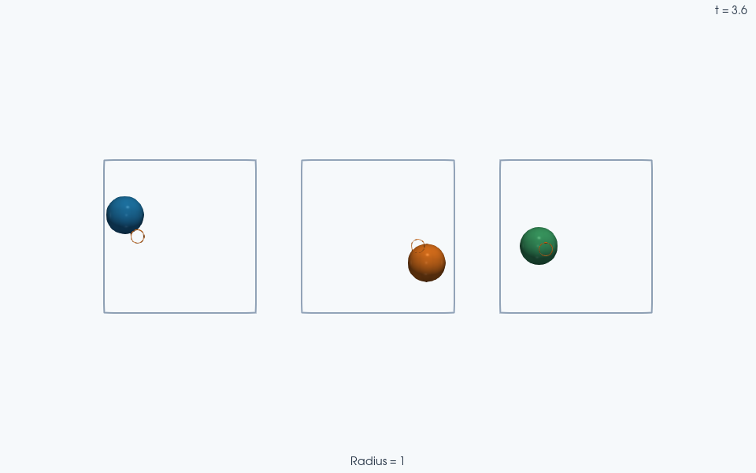

Note
Go to the end to download the full example code.
Drive vectorized environments with a custom policy#
A policy can be any JIT-compatible function with the signature
policy(obs, key, carry, **kwargs) -> (action, carry). This example uses a
hand-written proportional/velocity-feedback controller rather than a trained
network. Three independently reset single-agent environments illustrate
vectorization, stepping, trajectory collection and VTK output.
Install JaxDEM[rl,io]. The run requests 360 decisions of five physics frames
each, with 23 saved frames per environment. It demonstrates the interface;
the controller gains are heuristic and do not establish optimal navigation.
A policy with no learned or recurrent state#
import jax
import jax.numpy as jnp
import tempfile
from pathlib import Path
import numpy as np
import jaxdem as jdem
import jaxdem.rl as rl
from jaxdem import utils
The callable interface is independent of the policy’s implementation.
obs describes the current agent slots, key supports stochastic
choices, and carry contains any persistent policy state. A stateless
controller can leave the key unused and return carry unchanged.
This controller combines a unit goal direction with velocity feedback:
The first term pulls toward the goal; the second opposes the current velocity. Normalization caps the requested force norm at one. It is a heuristic saturated feedback law, not an analytical solution of the contact dynamics. A pure proportional force without velocity feedback can overshoot the target. The environment may further smooth the requested action and apply drag.
A learned policy fits the same interface. For example, after obtaining an
NNX graphdef and graphstate from a trained actor–critic, its callback
can follow this pattern (see the RL introduction for a complete workflow):
from flax import nnx
def learned_policy(obs, key, graphstate, *, graphdef):
model = nnx.merge(graphdef, graphstate)
distribution, _value = model(obs, sequence=False)
action = distribution.sample(seed=key)
_, graphstate = nnx.split(model)
return action, graphstate
Pass graphdef as a keyword argument to the stepping helpers. A trained
model can also be restored with CheckpointModelLoader. Call eval and
reset recurrent memory before evaluation; a recurrent callback returns its
evolving hidden state as part of graphstate rather than using None.
def policy(obs, key, carry):
# SingleNavigator observes [unit(pos-goal), clamped(pos-goal), velocity].
# Negating the first vector therefore points toward the objective.
# Shapes retain arbitrary leading environment and agent axes.
dim = obs.shape[-1] // 3
direction_away = obs[..., :dim]
velocity = obs[..., 2 * dim :]
force = -2.0 * direction_away - 0.5 * velocity
action = force / jnp.maximum(1.0, jnp.linalg.norm(force, axis=-1, keepdims=True))
return action, carry
Vectorize, then reset each copy with a distinct key#
The scalar agent axis is retained: observations/actions are (B, 1, features).
carry=None works because this controller has no internal state. A recurrent
policy would reset its carry whenever its corresponding episode ends.
vectorise_env(..., n=B) broadcasts the scalar environment into B copies;
independent reset keys then produce distinct initial conditions. It does
not turn one multi-agent scene into independent single-agent scenes. Here
each copy contains one agent, so its arrays retain shapes (B, 1, features)
and its policy forces have shape (B, 1, dim). Keeping that agent axis is
important even when its size is one.
num_envs = 3
logical_steps = 360
save_every = 15
skip_frames = 4
key = jax.random.key(1)
env = rl.Environment.create(
"single_navigator",
min_box_size=8.0,
max_box_size=8.0,
max_steps=logical_steps * (skip_frames + 1) + 1,
)
env = rl.vectorise_env(env, n=num_envs)
key, reset_key = jax.random.split(key)
env = env.reset(env, jax.random.split(reset_key, num_envs))
policy_initial_state, policy_initial_system = env.state, env.system
initial_distance = np.linalg.norm(
np.asarray(env.state.pos_c - env.env_params["objective"]), axis=-1
)
Step once, then collect the remaining chunks#
One logical decision requests 1+skip_frames physics steps. These helpers
freeze completed episodes; they do not reset them automatically. The horizon
above is deliberately longer than our complete requested rollout.
Manual stepping is useful when the caller must inspect or modify the state
between chunks. Trajectory rollout instead keeps the loop in JAX and stacks
the saved endpoints after each stride. Here one initial chunk advances 15
decisions, then 23 recorded chunks advance another 345. Thus
These are requested counts; an earlier termination/truncation would stop accepted physics and require an explicit reset before further advancement. The final step-count check makes that distinction observable.
carry = None
env, key, carry = utils.env_step(
env, policy, key, carry, n=save_every, skip_frames=skip_frames
)
env, key, carry, env_traj = utils.env_trajectory_rollout(
env,
policy,
key,
carry,
n=logical_steps // save_every - 1,
stride=save_every,
skip_frames=skip_frames,
)
final_distance = np.linalg.norm(
np.asarray(env.state.pos_c - env.env_params["objective"]), axis=-1
)
print("Initial distances:", initial_distance.ravel())
print("Final distances:", final_distance.ravel())
expected_steps = logical_steps * (skip_frames + 1)
np.testing.assert_array_equal(env.system.step_count, np.full(num_envs, expected_steps))
env.system.check_overflow()
print(f"Each environment advanced {expected_steps} physics frames.")
# Retain every native state/system pair for the three independent movies.
# These are parallel replicas, not successive frames of one shared scene.
scene_states = {
f"Environment {b + 1}": jax.tree.map(lambda x: x[:, b], env_traj.state)
for b in range(num_envs)
}
scene_systems = {
f"Environment {b + 1}": jax.tree.map(lambda x: x[:, b], env_traj.system)
for b in range(num_envs)
}
scene_targets = {
label: np.asarray(env.env_params["objective"])[b]
for b, label in enumerate(scene_states)
}
travel = np.linalg.norm(
np.asarray(env_traj.state.pos_c) - np.asarray(policy_initial_state.pos_c)[None],
axis=-1,
)
assert np.isfinite(travel).all()
assert float(travel.max()) > 1.0
print(f"Largest displacement during evaluation: {travel.max():.3f}")
Initial distances: [3.22883776 1.55850957 4.67528685]
Final distances: [1.30478189 0.99619481 0.40759304]
Each environment advanced 1800 physics frames.
Largest displacement during evaluation: 5.083
Export the 23 recorded trajectory frames per environment. The first manual
chunk above is not in env_traj; rollout frames are saved after each stride.
The temporary root is unique but persists for inspection after the process exits.
The saved environment has a trajectory axis before its batch axis, so particle
arrays have layout (T, B, N, dim). Pass the matching trajectory System as
well: each frame needs its own time and step count. trajectory=True tells
VTKWriter that axis zero is time, leaving the B environments as independent
output collections. Writing the whole trajectory avoids a Python save call
for every frame; the context manager still waits for all asynchronous writes.
frames_dir = Path(tempfile.mkdtemp(prefix="jaxdem-custom-policy-"))
with jdem.VTKWriter(directory=frames_dir) as writer:
writer.save(env_traj.state, env_traj.system, trajectory=True)
print(f"Open the PVD collections in ParaView: {frames_dir}")

Orange rings mark the environment’s actual targets. They are display annotations projected in front of the agent spheres, with radius 0.35; they are not extra simulated particles.
Left to right: Environment 1; Environment 2; Environment 3.
Open the PVD collections in ParaView: /tmp/jaxdem-custom-policy-5c4zbbj_
Total running time of the script: (0 minutes 15.614 seconds)